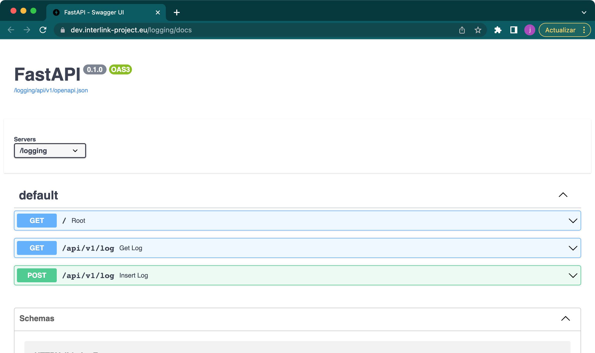

Logging Instruction for Microservices
The microservice called “backend-logging”, aims to centralize the logs that resulf from user actions. Within each of the deployed microservices, the necessary functions for sending logs to this component must be implemented.
The purpose of this short manual is to describe the series of steps that a microservice must perform to store and access the logs.
Send or produce logs
Data structure
The data sent to the registration service needs to contain the information relevant to the application. In the case of the coproduction microservice, for example, a data log could contain the following information when a user creates a new asset.
# any crud.py file
await log({
"model": "ASSET",
"action": "CREATE",
"coproductionprocess_id": asset.task.objective.phase.coproductionprocess_id,
"phase_id": asset.task.objective.phase_id,
"objective_id": asset.task.objective_id,
"task_id": asset.task_id,
"asset_id": asset.id,
"external_interlinker": False,
"interlinker_type": "SOFTWAREINTERLINKER EXTERNALINTERLINKER",
"knowledgeinterlinker_id": asset.knowledgeinterlinker_id,
"knowledgeinterlinker_name": interlinker.get("name"),
"softwareinterlinker_id": interlinker.get("softwareinterlinker").get("id"),
"softwareinterlinker_name": interlinker.get("softwareinterlinker").get("name"),
})
# messages.py of the coproduction service
async def log(data: dict):
if is_logging_disabled():
return
if not "user_id" in data:
data["user_id"] = context.data.get("user", {}).get("sub", "anonymous")
data["service"] = "coproduction"
res = requests.post("http://logging/api/v1/log", data=json.dumps(data,cls=UUIDEncoder), timeout=2)
The above line of code calls the log function (mentioned afterwards) with a dictionary including relevant data about the action performed (model, action, phase, task_id, etc). The log function itself adds ALWAYS the user_id and the service attributes.
The amount of information saved in a log depends on the specific action that you want to record, therefore the structure could vary from one service to another.
The mandatory fields are:
“user_id”: subject of the token provided by the AAC. Corresponds to the user that performs the action.
“service” (“coproduction”, “servicepedia”, “loomio”, “catalogue”, “collaborative_environment_frontend”…)
Nevertheless, it is recommended to add at least these keys:
“model” (“ASSET”, “COPRODUCTIONPROCESS”…)
“action” (GET, LIST, CREATE, UPDATE, DELETE, or custom actions such as “ADD_USER”…)
Send a log through a POST request to the API (Synchronous approach)

You can log an action by simply creating a POST request to these endpoints (depending on the environment).
POST http://localhost/logging/api/v1/log
POST https://dev.interlink-project.eu/logging/api/v1/log
POST https://demo.interlink-project.eu/logging/api/v1/log
POST https://zgz.interlink-project.eu/logging/api/v1/log
POST https://varam.interlink-project.eu/logging/api/v1/log
POST https://mef.interlink-project.eu/logging/api/v1/log
Furthermore, the calls SHOULD be made internally, by replacing the DNS name by the name of the logging docker service:
POST http://logging/api/v1/log